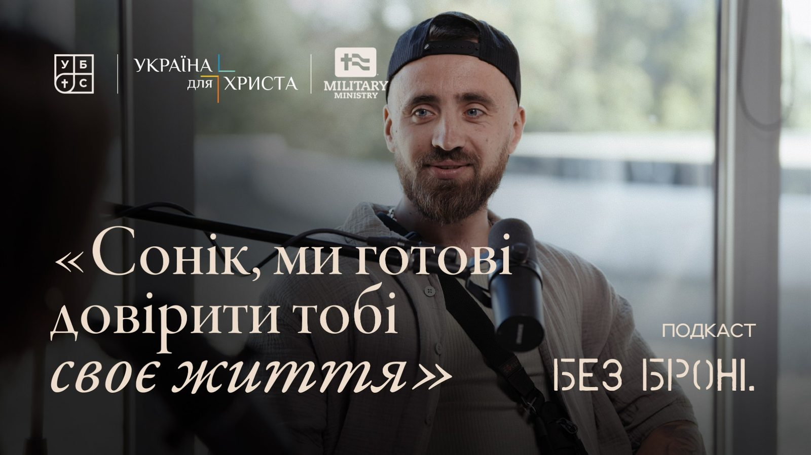

Сезон 1 Епізод 7 · [ЗАПОВНИТИ: дата виходу]
Артур «Сонік» Сафонов: «Війна для мене ніколи не закінчиться»

Артур — доброволець, колишній командир штурмового відділення ДУК «Правий сектор», дитячий тренер із футболу, батько трьох дітей. До повномасштабного вторгнення займався спортивним служінням місії «Україна для Христа». Розмова про добровольчий шлях, братерство, втрату побратимів, розчарування в людях, але не в Бозі, і про те, чому війна для нього ніколи не закінчиться.
Звідки позивний «Сонік»
Олександр: Ви слухаєте подкаст «Без броні». Тут ми говоримо про людину, віру і війну — дуже відверто. Я дуже тішуся вітати в нас у гостях Артура Сафонова. До повномасштабного вторгнення Артур працював дитячим тренером і займався спортивним служінням місії «Україна для Христа». У 27 років він добровольцем пішов на війну, служив командиром відділення у штурмовому підрозділі. А після народження третьої дитини повернувся до цивільного життя. Артуре, раді вітати тебе в нас на подкасті!
Артур: Привіт! Дякую за запрошення.
Олександр: Почну одразу з цікавого. У тебе позивний «Сонік». Чому саме він? Можливо, не всі дивилися мультик і фільм — Надя якраз перед цим питала: «А що це за фільм?»
Артур: Якщо чесно, позивний мені запропонувала дружина, а син його підтвердив. Перед тим як я йшов на службу, ми дивилися фільм «Сонік». Мені дуже сподобався сам персонаж: його відірваність, бажання двіжувати, дружба, активність. Потім я підстригся, у мене була така коротка зачіска. Син чухає мені голову і каже: «Ти як Сонік, дуже колючий!» Звідси й пішло.
А остаточно я підтвердив позивний у тренувальному таборі, коли встановив рекорд на смузі перешкод. У нас навіть був жарт, що в нас спецпідрозділ «соніків». Якщо десь виїжджали на роботу, одразу: «Так, соніки, збираємося!»
Шлях добровольця
Олександр: Коли ти пішов на війну, тобі було 27. А перед цим у ТЦК тобі відмовляли: «27 років — окей, але в тебе немає бойового досвіду». Але ти наполягав. Чому?
Артур: У мене в голові не вкладалося: як це так — люди потрібні, а людей не беруть? Почалося з того, що я пішов у ТрО. Спочатку був у Київській, потім у Тернопільській. У Тернополі стояв на блокпості й не розумів, що я там роблю з тією паличкою: пропускав машини, перевіряв, чи немає відеореєстраторів… Потім нас вишикували й запитали: «Хто готовий іти на війну?» Я кажу: «Я готовий!» — «Добре, ми вас наберемо». Чекаю день, чекаю другий. Знайшов їхні контакти, дзвоню: «Ви мали мені набрати — не забули?» А вони: «У вас немає бойового досвіду, треба почекати».
І я почав шукати інші місця, де можна служити й бути корисним. Чисто випадково натрапив на «Правий сектор» — Добровольчий український корпус, де й провів усю свою службу. Потрапив до них на триденний-чотириденний вишкіл і там зрозумів, що мені це подобається: відчуття побратимства, серйозна підготовка, духовний контекст — молитва вранці. Наприкінці вишколу питають: «Хто готовий на війну?» Я кажу: «Я готовий!» — «Поїхали завтра». — «Ні, почекайте, треба узгодити з родиною».
Рішення разом із дружиною
Олександр: Чому для тебе було так важливо саме йти на війну, проявляти ініціативу, казати «я готовий їхати»? Що стало головним?
Артур: Було багато моментів. Перше: до повномасштабного вторгнення я був тренером із футболу. І коли побачив, як діти в Києві ховаються в підвалі, коли летять літаки і все навколо бахкає, як вони плачуть і бояться, — я сказав собі, що не хочу цього бачити. Я маю хоч на один відсоток на це вплинути.
Друге: моя сестра була в окупації в Каховці. Чотири чи п'ять днів виїжджала звідти під постійними обстрілами. І це якраз був час Бучі, Ірпеня — розстріляні люди, діти… Як чоловік я відчував за собою відповідальність: окей, я можу — значить, треба йти.
Олександр: На той момент у тебе була дружина і двоє дітей. Як вона реагувала? Як виглядали ваші розмови?
Артур: Вона сказала: «Я бачила, що ти все одно підеш на війну, бо в ТрО ти не знаходив спокою». Я постійно готувався, вчився сам і вчив інших як інструктор. Я розумів, що більша відповідальність ляже на неї. Повернувшись із вишколу, я сказав прямо: «Леро, дивись: якщо ми вирішуємо, що я їду на війну, на тобі будуть діти й усі побутові питання. І треба бути готовою до того, що я можу загинути, а ти залишишся одна з дітьми й цією відповідальністю. Ти готова?»
Вона відповіла: «Я знала, що ця розмова колись буде. Але я прошу: виріши це питання з Богом, а я буду готова йти за тобою, яким би не було рішення». Для мене це був дуже важливий момент. Я радився з побратимами — Ромою Пікуліком, Женею. Вони казали: «Ти маєш ухвалити це рішення сам і сам за нього відповідати». І я вирішив іти.
Від інструктора до командира штурмового відділення
Олександр: А які були аргументи йти саме в бойовий підрозділ? Тобі ж пропонували бути інструктором із фізпідготовки й готувати бійців.
Артур: Я вважав, що роблю занадто мало і можу більше. Хотілося відчути смак війни. Мені сказали, що є можливість поїхати в бойовий підрозділ, пройти бойове хрещення, понюхати пороху й повернутися інструктором уже з бойовим досвідом. Ми пройшли сильну підготовку і жорсткий відбір: із 47 людей у штурмову роту взяли 11. Почувалися «рексиками».
Але коли приїхали туди, хлопці, з якими ми здружилися, сказали: «Соніку, ми готові довірити тобі своє життя. Хочемо, щоб ти залишився з нами як наш командир». Це було конкретне рішення. Я зателефонував своєму командирові в навчальному таборі: «Вибачайте, я підготую заміну, а сам залишаюся з хлопцями». З того моменту я став командиром відділення штурмового підрозділу.
Олександр: Що для тебе означала ця відповідальність — коли хлопці довірили тобі своє життя?
Артур: Я по-справжньому зрозумів її, коли ми вже були на позиціях і почався бій. Тобі треба вести бій і відповідати за людей. Перше бойове хрещення: починається перестрілка, хлопці за 15 секунд вистрілюють майже все з усіх стволів. А ти керуєш: одного за шкірку назад, той поранений, спочатку відбиваємо штурм, потім надаємо допомогу… Керувати цим було складно.
Але найважче в командуванні — відповідати за їхній емоційно-психологічний стан. Вони вивалюють тобі все, що їх дістало, а ти вбираєш це як губка. І не можеш показати слабкість, бо це вплине на їхній дух. Просто йдеш у ліс, кричиш, молишся, повертаєшся з гарним настроєм і підтримуєш пацанів.
Молоді «соніки» і братерство
Олександр: Розкажи про своїх бійців. Яка у вас була атмосфера?
Артур: У мене було семеро хлопців — від 18 до 27 років, і один 34-річний. Зовсім молоді хлопці! Найбільше вони боялися, що ми поїдемо на бойові, а їх не візьмуть, бо десь прочитали, що на бойові можна тільки з 21 року. Один виїхав з окупації на Херсонщині у 19 років і пішов служити. Інший — мій близький брат Вася. У 18 років він утік від родини з Німеччини: сказав мамі, що йде на пробіжку, взяв паспорт і приїхав воювати в Україну. Його ніде не брали, але він усе одно знайшов Добровольчий корпус.
Атмосфера була нереальна. Як ми танцювали, як колядували! На голову капає, а тобі прекрасно. Це відчуття сім'ї і підтримки словами не передати — це треба пережити. Я читав про це книжку «Плем'я»: умови навколо можуть бути жахливими, але відчуття побратимства нічим не заміниш.
Пам'ять про Васю і Трою
Олександр: У тебе є татуювання, пов'язані з війною. Розкажи про них.
Артур: У мене вся права сторона пов'язана з війною. Найвище — про мого братика Васю: «Назавжди брат, назавжди ангел». Його немає вже більше року… Напис «Не витрачай своє життя даремно» — це коли загинула моя посестра Троя, 21-річна бойова медикиня. І написи про мою віру: «Бог — мій щит, моя скеля, моя надія».
Біль живе всередині. Коли Вася загинув, я молився лише про одне: «Боже, дай мені побачити його ще хоч на одну хвилину. Я так багато йому не сказав…»
Ми з Васею були максимально близькі. Спали в казармі поруч, розділені лише маленькою перегородкою. Я пообіцяв його родині, що наглядатиму за ним. І в боях ми завжди були поруч.
Останній бій
Олександр: Розкажи про ваш останній бій.
Артур: Ми потрапили в повне оточення. Нас вишикували й сказали: потрібно 16 добровольців, які підуть на позиції, але повернуться звідти або «двохсотими», або «трьохсотими». Я сказав своїм хлопцям, що ми не йдемо. Але Вася дивиться на мене і каже: «Соніку, я йду, я маю бути там». І виходить.
У мене в голові все перевернулося. Я вже знав, що дружина вагітна донечкою. Мені було страшно не повернутися додому й не взяти на руки свою дитину. Але я бачу, що мій брат там. Іду й молюся: «Боже, мені страшно, але я маю бути з ним». І Господь ніби каже: «Чому ти сумніваєшся в Мені? Я провів тебе аж досі — чому думаєш, що зараз не подбаю?»
Підбігаю до бусика й кажу командирові: «Я йду, Вася там». Ми зайшли на позиції. Дванадцять годин без зв'язку, рації не працюють, ми в повному оточенні. Вася тоді записав відео: «Кажуть, справжні друзі пізнаються в біді. Дякую Сонікові, що не залишив мене». І прилітає 120-та міна. Один побратим загинув одразу, Васі осколком розірвало руку, мене відкинуло. Приходжу до тями, затягую Васю в бліндаж, надаю допомогу — і розумію, що півруки немає. Прошу дозволу на вихід, і ми проривалися під жорстким обстрілом із кожної посадки. Поруч падають хлопці…
Я тягну Васю на плечах і кричу 90-й псалом: «Тисяча впаде біля тебе, і десять тисяч праворуч від тебе, але до тебе не наблизиться…» — «Боже, дай вийти!» Ми дійшли до евакуації. У машині співали пісні, я встромляв пальці йому в рану, щоб він не знепритомнів. Довезли до госпіталю, я зателефонував його мамі: «Ми поранені, Вася тяжко, але живий».
На жаль, пізніше врятувати його не вдалося… Мама дзвонила подякувати, а бабуся на цвинтарі питає: «Соніку, чого ти його цього разу не спас?» І ти не знаєш, що відповісти… Я досі пишу йому в Telegram, коли важко або коли радість.
Третя дитина і звільнення
Олександр: Наскільки складно було ухвалити рішення звільнитися з війська?
Артур: Коли дізнався про третю вагітність, я мало не заплакав. Син записав мені відеозвернення: «Тату, ти наш герой, але для сім'ї ти найкращий. Бог подарував нам поповнення… Навоювався!» Мені було дуже важко. Ми не планували цю вагітність. І я пообіцяв дружині: якщо буде хлопчик — залишаюся на ротацію, якщо дівчинка — звільняюся. А я ще з першої вагітності мріяв про донечку, знав її ім'я — Емілі, блакитні очі, кучеряве волосся. І народилася донечка! Слово є слово — обіцянку треба виконувати.
Їдучи додому, я так плакав під пісню «Додому»… Мозок розумів, що їдеш не у відпустку, що більше не візьмеш зброю і не зайдеш із хлопцями пліч-о-пліч на позицію. Перші пів року після звільнення моє життя все одно було в Telegram і Signal — я контролював усі процеси на позиціях. А потім заново вчився жити в цивільному світі.
Церква, віра і підтримка військових
Олександр: Якими були твої стосунки з церквою під час служби і після повернення?
Артур: Це болюча тема. Мені не вистачало церкви на службі. Був період розчарування у віруючих. У «християнській бульбашці» всі такі гарні, а коли ти на тонкому лезі між життям і смертю, про тебе часто забувають. Із церкви мені за весь час майже ніхто не писав. Буває, пишеш: «Друзі, ми в оточенні, моліться!» — а наступного дня ніхто навіть не спитає, чи ти живий. Не треба грошей — важливо знати, що про тебе пам'ятають. А щоб написати хоч слово з фронту, я іноді біг 300 метрів до Starlink під мінометним обстрілом.
Мій посил до церкви: не викреслюйте людей, коли вони на службі, і не викреслюйте, коли вони повертаються! Найбільше суїцидів і алкоголізму трапляється саме тоді, коли боєць повертається і падає у вакуум. Хочете святкувати повернення військового — будьте з ним і його родиною протягом усієї служби!
Зараз ми перейшли в іншу церкву. Там є служіння «Наш солдат» — вони приїжджали до мене на фронт і в госпіталь. Служіння і проповіді там українською. Пастор каже громаді: «Війна за вікном — вчіться такмеду, збирайте дрони!» Там дієва віра, а не просто слова.
Олександр: А чи було в тебе розчарування в Бозі?
Артур: Ні, в Бозі я не розчарувався. Я розчарувався в людях, бо покладав на них завеликі надії. До Бога в мене багато питань про життя і смерть: чому гинуть молоді, найкращі хлопці й дівчата, як Троя чи Вася, а інші не цінують життя? Але я знаю: якби не Бог, я б залишився в тій посадці. Усе, що я маю — дім, родина, життя, — це завдяки Йому.
Мій посил до церкви: не викреслюйте людей, коли вони на службі, і не викреслюйте, коли вони повертаються!
«Війна для мене ніколи не закінчиться»
Олександр: Як проходила адаптація до цивільного життя?
Артур: Мені допомогла робота. Я реалізував мрію — відкрив власну кав'ярню, фітнес-студію, студію дитячих танців. Працюю масажистом, учителем фізкультури в християнській школі й тренером із боксу. Ремонт робив своїми руками днями й ночами, щоб витягнути себе з депресивного стану. Коли зайшов у студію з чашкою кави й побачив, як тренуються дітки, зрозумів: це те, про що я мріяв. Мені легше жити, коли багато справ і я приношу користь.
З дружиною спочатку було складно. Лера мудра, вона казала: «Артуре, просто піди погуляй, послухай музику, попий водички». Ми їздили на сімейні ретрити, багато розмовляли — і зараз набагато краще розуміємо одне одного.
Олександр: Чи уявляєш ти, що війна для тебе колись закінчиться?
Артур: Ні. Війна для мене ніколи не закінчиться. Вона закінчиться для тих, хто дивиться на неї здалеку. А для нас вона триватиме завжди — у пам'яті про загиблих побратимів, у відвідуванні їхніх могил, у підтримці їхніх родин. Але відновлення можливе. Наше побратимство не закінчується в окопах — воно триває все життя. І я готовий підтримати кожного, кому це потрібно.
Олександр: Дякуємо тобі, Артуре, за твою службу, відвертість і час!
Артур: Дякую вам!
Війна для мене ніколи не закінчиться. Вона закінчиться для тих, хто дивиться на неї здалеку.
Текстова версія підготовлена з уже скороченої транскрипції, а не з дослівного запису: частина реплік у ній переказана стисло. Репліки ведучих не розмічені за іменами, тож тут вони подані як Олександрові.